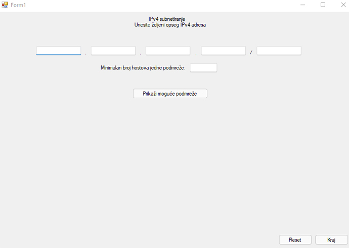

.png)
.png)

Projekti govore hiljadu riječi.


Zapiši da ne zaboraviš !
Koliko puta u životu nam se samo desilo da hitno moramo napraviti važnu bilješku za posao ili napomenu za neku bitnu stvar? Svaki put, kao po nekom pravilu, nemamo praktičan komadić papira ili olovku pri ruci. Čak i kad zapišemo često nam se desi to da izgubimo tu bilješku. Sa našim pametnim telefonima smo shvatili koliko je pravljenje digitalnih bilješki praktičnije. Ova web aplikacija Vam upravo omogućava kreiranje bilješki na desktop platformi.
Tehnologije: HTML, CSS, JS



Subnetiranje mreže
Koliko puta u životu nam se samo desilo da hitno moramo napraviti važnu bilješku za posao ili napomenu za neku bitnu stvar? Svaki put, kao po nekom pravilu, nemamo praktičan komadić papira ili olovku pri ruci. Čak i kad zapišemo često nam se desi to da izgubimo tu bilješku. Sa našim pametnim telefonima smo shvatili koliko je pravljenje digitalnih bilješki praktičnije. Ova web aplikacija Vam upravo omogućava kreiranje bilješki na desktop platformi.
Subnetiranje mreže
Koliko puta u životu nam se samo desilo da hitno moramo napraviti važnu bilješku za posao ili napomenu za neku bitnu stvar? Svaki put, kao po nekom pravilu, nemamo praktičan komadić papira ili olovku pri ruci. Čak i kad zapišemo često nam se desi to da izgubimo tu bilješku. Sa našim pametnim telefonima smo shvatili koliko je pravljenje digitalnih bilješki praktičnije. Ova web aplikacija Vam upravo omogućava kreiranje bilješki na desktop platformi.